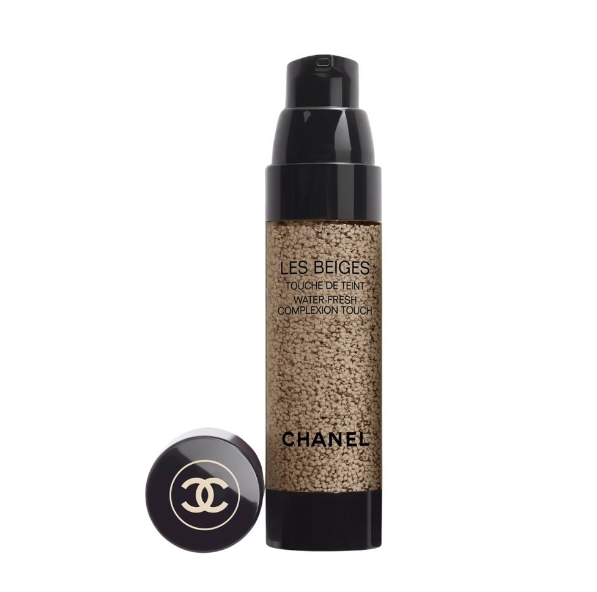

Chanel
Les Beiges Water-Fresh Complexion Touch
B20 · claro médio neutro
Skin tint em gel com microgotículas de pigmento: leve, iluminadora e construível, para pele fresca e naturalmente uniforme.
Pincéis para aplicar
 BK Beauty101
BK Beauty101 BK Beauty115
BK Beauty115 RephrLC 03
RephrLC 03